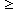

![[Front]](images/OpenGL3.gif)
![[Reference]](../buttons/ReferenceOff.gif)
![[Imp. Guide]](../buttons/ImpGuideOff.gif)
![[Index]](../buttons/IndexOff.gif) glStencilFunc: set function and reference value for stencil testing.
glStencilFunc: set function and reference value for stencil testing.
C Specification |
Parameters |
Description |
Notes |
Errors |
Associated Gets |
See Also
void glStencilFunc(
GLenum func,
GLint ref,
GLuint mask)
- func
- Specifies the test function. Eight tokens are valid:
GL_NEVER, GL_LESS,
GL_LEQUAL, GL_GREATER,
GL_GEQUAL, GL_EQUAL,
GL_NOTEQUAL, and GL_ALWAYS. The initial
value is GL_ALWAYS.
- ref
- Specifies the reference value for the stencil test. ref
is clamped to the range [0, 2n
 1], where n is the
number of bitplanes in the stencil buffer. The initial value is 0.
1], where n is the
number of bitplanes in the stencil buffer. The initial value is 0.
- mask
- Specifies a mask that is ANDed with both the reference value and the
stored stencil value when the test is done. The initial value is all 1s.
Stenciling, like depth-buffering, enables and disables drawing on a per-pixel
basis. You draw into the stencil planes using GL drawing primitives, then
render geometry and images, using the stencil planes to mask out portions of
the screen. Stenciling is typically used in multipass rendering algorithms to
achieve special effects, such as decals, outlining, and constructive solid
geometry rendering.
The stencil test conditionally eliminates a pixel based on the outcome of a
comparison between the reference value and the value in the stencil buffer.
To enable and disable the test, call glEnable and glDisable with argument
GL_STENCIL_TEST. To specify actions based on the outcome of
the stencil test, call glStencilOp.
func is a symbolic constant that determines the stencil
comparison function. It accepts one of eight values, shown in the following
list. ref is an integer reference value that is used in the
stencil comparison. It is clamped to the range [0, 2n
1], where n is the
number of bitplanes in the stencil buffer. mask is bitwise
anded with both the reference value and the stored stencil value, with
the anded values participating in the comparison.
If stencil represents the value stored in the corresponding
stencil buffer location, the following list shows the effect of each
comparison function that can be specified by func. Only if
the comparison succeeds is the pixel passed through to the next stage in the
rasterization process (see glStencilOp). All tests treat
stencil values as unsigned integers in the range [0,
2n 1], where
n is the number of bitplanes in the stencil buffer.
The following values are accepted by func:
- GL_NEVER
- Always fails.
- GL_LESS
- Passes if (ref & mask) <
(stencil & mask ).
- GL_LEQUAL
- Passes if (ref & mask)
 (stencil & mask ).
(stencil & mask ).
- GL_GREATER
- Passes if (ref & mask) >
(stencil & mask ).
- GL_GEQUAL
- Passes if (ref & mask)

(stencil & mask ).
- GL_EQUAL
- Passes if (ref & mask) =
(stencil & mask ).
- GL_NOTEQUAL
- Passes if (ref & mask)
(stencil & mask ).
- GL_ALWAYS
- Always passes.
Initially, the stencil test is disabled. If there is no stencil buffer, no
stencil modification can occur and it is as if the stencil test always passes.
- GL_INVALID_ENUM is generated if func is
not one of the eight accepted values.
- GL_INVALID_OPERATION is generated if glStencilFunc is executed between
the execution of glBegin and the
corresponding execution of glEnd.
glGet with argument
GL_STENCIL_FUNC
glGet with argument
GL_STENCIL_VALUE_MASK
glGet with argument
GL_STENCIL_REF
glGet with argument
GL_STENCIL_BITS
glIsEnabled with argument
GL_STENCIL_TEST
glAlphaFunc,
glBlendFunc,
glDepthFunc,
glEnable,
glIsEnabled,
glLogicOp,
glStencilOp
![[Prev]](buttons/ArrowLeftOff.gif)
![[Next]](buttons/ArrowRightOff.gif)
![[Up]](buttons/ArrowUpOff.gif) C Specification
C Specification